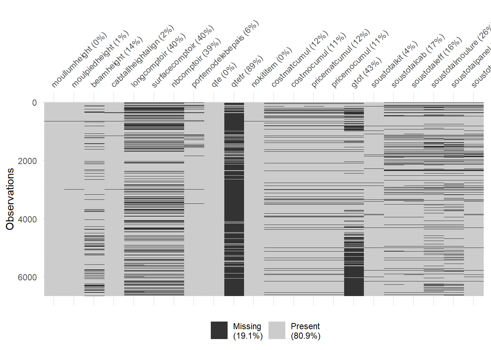
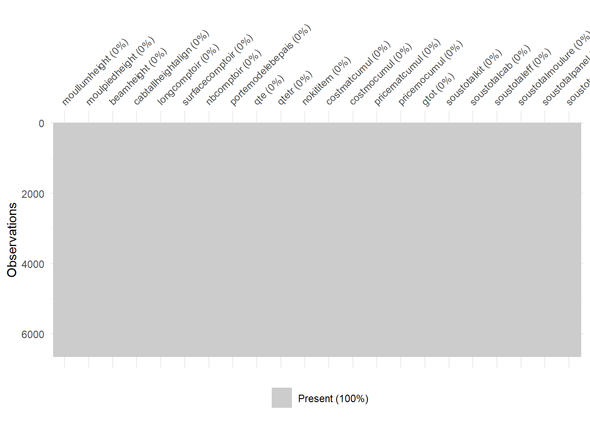
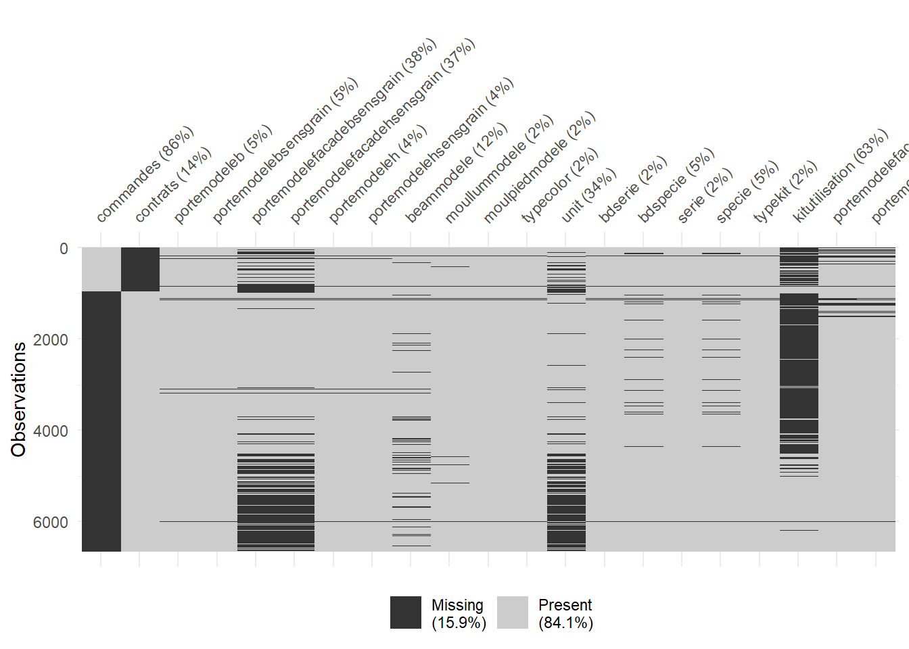
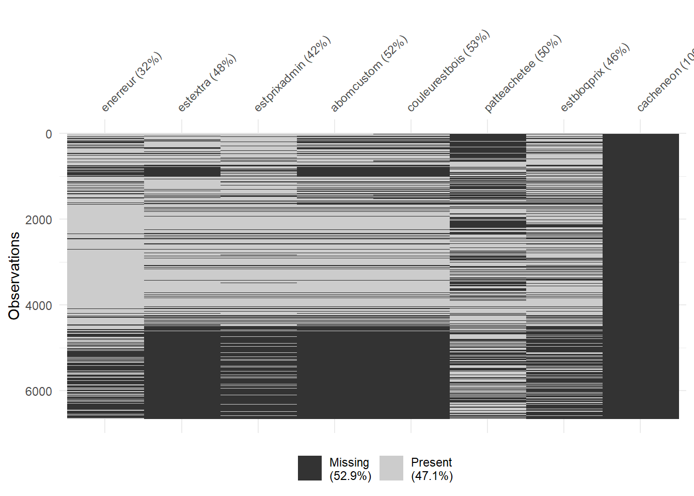
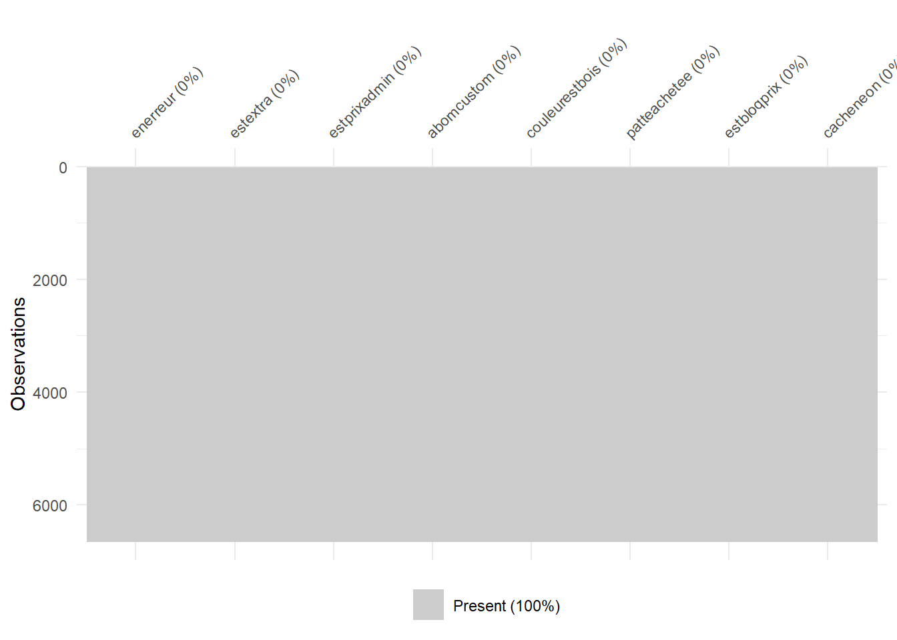
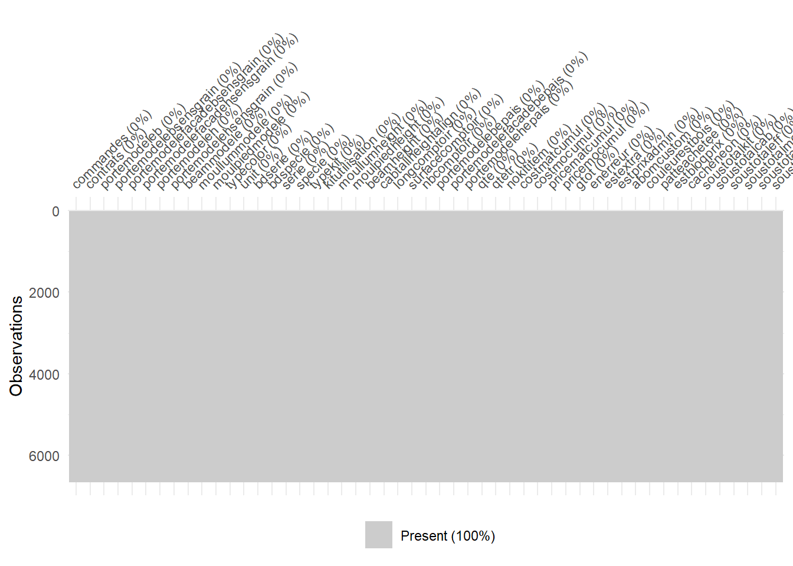

Rows: 6,652
Columns: 129
$ `$porteModeleB` <chr> "Manufacturier~PLAT 16mm_MDF", NA, NA, …
$ `$porteModeleBSensGrain` <chr> "sensGrain_Vert", NA, NA, NA, NA, "sens…
$ `$porteModeleFacadeBSensGrain` <chr> "sensGrain_Vert", "sensGrain_Vert", NA,…
$ `$porteModeleFacadeHSensGrain` <chr> "sensGrain_Vert", "sensGrain_Vert", "se…
$ `$porteModeleH` <chr> "Manufacturier~PLAT 16mm_MDF", NA, "Man…
$ `$porteModeleHSensGrain` <chr> "sensGrain_Vert", NA, "sensGrain_Vert",…
$ beamModele <chr> "Moulure_plafond", "Moulure_plafond", "…
$ moulLumHeight <chr> "76.19999999999999", "76.19999999999999…
$ moulLumModele <chr> "aucun", "aucun", "aucun", NA, NA, "auc…
$ moulPiedHeight <chr> "114.3", "114.3", "114.3", "114.3", NA,…
$ moulPiedModele <chr> "Moulure_coupDePied", "Moulure_coupDePi…
$ sousTotalKit <chr> "346.43", "330.66", "0", "0", "0", "193…
$ typeColor <chr> "2 faces", "2 faces", "2 faces", NA, NA…
$ `$porteModeleFacadeB` <chr> "Manufacturier~PLAT 16mm_MDF", NA, NA, …
$ `$porteModeleFacadeH` <chr> "Manufacturier~PLAT 16mm_MDF", NA, NA, …
$ `$cle` <chr> "1", "1", "1", "1", "1", "1", "1", "1",…
$ `$code` <chr> "k01", "k01", "k01", "k01", "k01", "k01…
$ `$enErreur` <chr> "1", "1", "1", "1", "1", "1", "0", "0",…
$ `$estExtra` <chr> "false", "", "false", "false", "false",…
$ `$no` <chr> "1", "1", "1", "1", "1", "1", "1", "1",…
$ `$nom` <chr> "~[kit] 1", "~[kit] 1", "~[kit] 1", "~[…
$ `$qte` <chr> "1", "1", "1", "1", "1", "1", "1", "1",…
$ `$qteTr` <chr> "0", "0", "0", "0", NA, NA, NA, NA, NA,…
$ noKitItem <chr> "1", "1", "1", "1", "1", "1", "1", "1",…
$ `$aBomCustom` <chr> "false", "", "false", "false", "false",…
$ `$gTot` <chr> "346.43", "386.29", NA, NA, NA, "1549.7…
$ `$unit` <chr> "346.43", "386.29", "0", "0", "0", "154…
$ cost_matCumul <chr> "52.57", "71.2", NA, NA, NA, "411.33", …
$ cost_moCumul <chr> "189.99", "200.12", NA, NA, NA, "673.47…
$ price_matCumul <chr> "75.04", "101.72", NA, NA, NA, "587.73"…
$ price_moCumul <chr> "271.39", "285.87", NA, NA, NA, "962.02…
$ `$estPrixAdmin` <chr> "false", "", NA, NA, NA, "false", "fals…
$ `$statErr` <chr> "1", "1", "1", "1", "1", "1", NA, "8", …
$ `$items` <chr> "Cube304.812\"304.812\"990.6990.6381038…
$ `$pourcEsc` <chr> "0", "0", "0", "0", "0", "0", "0", "0",…
$ `$pourcEscSup` <chr> "0", "0", "0", "0", "0", "0", "0", "0",…
$ `$sousTotal` <chr> "346.43", "330.66", "0", "0", "0", "193…
$ assemblage <chr> "assembletrue", "assembletrue", "nonAss…
$ bd_edgePorte <chr> "edgePorte_edge1mm", "edgePorte_edge1mm…
$ bd_finishColor <chr> "color_37E", "color_5AE", "color_37E", …
$ bd_handle <chr> "POI-PHIL-160-NM", "POI-PHIL-160-NM", "…
$ bd_handleOri <chr> "vertical", "vertical", "vertical", NA,…
$ bd_serie <chr> "melamine", "melamine", "melamine", NA,…
$ bd_specie <chr> "Autre", "Autre", "Autre", NA, NA, "Aut…
$ beamHeight <chr> "101.60000000000028", "101.600000000000…
$ cabAlignBase <chr> "882.65", "882.65", "882.65", NA, NA, "…
$ cabConstruct <chr> "cabConstruction_Melamine_Blanche_58", …
$ cabDegagementWall <chr> "457.2", "457.2", "457.2", "457.2", "45…
$ `$t_cabDegagementWall` <chr> "18\"", "18\"", "18\"", "18\"", "18\"",…
$ cabDesign <chr> "CabDesign_Frameless", "CabDesign_Frame…
$ cabHautComptoir <chr> "31.75", "31.75", "31.75", NA, NA, "31.…
$ cabHinge <chr> "Hinge_part_A_amort", "Hinge_part_A_amo…
$ cabTallHeightAlign <chr> "2362.2", "2362.2", "2286", NA, NA, "23…
$ cabTypeComptoir <chr> "quartz", "quartz", "quartz", NA, NA, "…
$ cabWallProf <chr> "327.025", "327.025", "327.025", NA, NA…
$ comptoirCouleur <chr> "TECHNI_Gobi_Grey", "TECHNI_Gobi_Grey",…
$ comptoirMod <chr> "quartz_1_1_4", "quartz_1_1_4", "quartz…
$ df_edgePorte <chr> "edgePorte_edge1mm", "edgePorte_edge1mm…
$ df_finishColor <chr> "color_37E", "color_5AE", "color_37E", …
$ df_handle <chr> "POI-PHIL-160-NM", "POI-PHIL-160-NM", "…
$ df_handleOri <chr> "vertical", "vertical", "vertical", NA,…
$ df_serie <chr> "melamine", "melamine", "melamine", NA,…
$ df_specie <chr> "Autre", "Autre", "Autre", NA, NA, "Aut…
$ drawerConst <chr> "metalblanc", "metalblanc", "metalblanc…
$ drawerSlide <chr> "drawerSlide_F_Ext_UM_R13", "drawerSlid…
$ edgeBanding <chr> "centPanDesign_edge1mm", "centPanDesign…
$ edgeColle <chr> "pur", "pur", "pur", "pur", "pur", "pur…
$ edgePorte <chr> "edgePorte_edge1mm", "edgePorte_edge1mm…
$ edgeTablette <chr> "non", "non", "non", "non", "non", "non…
$ equerre <chr> "equerre_Std", "equerre_Std", "equerre_…
$ finishColor <chr> "color_37E", "color_5AEtrue", "color_37…
$ handle <chr> "POI-PHIL-160-NM", "POI-PHIL-160-NM", "…
$ handleOri <chr> "vertical", "vertical", "vertical", NA,…
$ ligne <chr> "Custom", "Custom", "Stock", "Eco", NA,…
$ serie <chr> "melamine", "melamine", "melamine", NA,…
$ signature <chr> "mel_blanche", "mel_blanche", "mel_blan…
$ specie <chr> "Autre", "Autre", "Autre", NA, NA, "Aut…
$ tabletteType <chr> "tablette_metal", "tablette_metal", "ta…
$ typeKit <chr> "cuisine", "cuisine", "cuisine", NA, NA…
$ wd_edgeBanding <chr> "centPanDesign_edge1mm", "centPanDesign…
$ bd_edgeBanding <chr> "centPanDesign_edge1mm", NA, "centPanDe…
$ df_edgeBanding <chr> "centPanDesign_edge1mm", "centPanDesign…
$ cabToeKickHeight <chr> "101.6", "101.6", "101.6", "101.6", "11…
$ `$t_cabToeKickHeight` <chr> "4.5\"", "4\"", "4\"", "4\"", "4.5\"", …
$ cabToeKickProf <chr> "76.2", "76.2", "76.2", "76.2", "76.2",…
$ `$t_cabToeKickProf` <chr> "3\"", "3\"", "3\"", "3\"", "3\"", "3\"…
$ cabToeKickType <chr> "Levelers", "Levelers", "Levelers", "Le…
$ commandes <chr> "C-000089", "C-000093", "C-000115", "C-…
$ `$cumulComptoir` <chr> NA, "PSD", "PSD", NA, NA, "733.42", NA,…
$ `$sousTotalCab` <chr> NA, "297.37", NA, NA, NA, "1519.91", "3…
$ `$sousTotalEff` <chr> NA, "330.66", NA, NA, NA, "1935.55", "3…
$ `$sousTotalMoulure` <chr> NA, "11.86", NA, NA, NA, "17.29", "0", …
$ `$sousTotalPanel` <chr> NA, "21.43", NA, NA, NA, "6.87", "0", "…
$ `$totalComptoir` <chr> NA, "PSD", "PSD", NA, NA, "733.42", NA,…
$ sousTotalKitEff <chr> NA, "330.66", NA, NA, NA, "1935.55", "3…
$ `$porteModeleB_epais` <chr> NA, "15.875", NA, NA, NA, "15.875", "15…
$ `$t_$porteModeleB_epais` <chr> NA, "0.625\"", NA, NA, NA, "0.625\"", "…
$ `$porteModeleFacadeB_epais` <chr> NA, "15.875", NA, NA, NA, "15.875", "15…
$ `$t_$porteModeleFacadeB_epais` <chr> NA, "0.625\"", NA, NA, NA, "0.625\"", "…
$ `$porteModeleFacadeH_epais` <chr> NA, "15.875", NA, NA, NA, "15.875", "15…
$ `$t_$porteModeleFacadeH_epais` <chr> NA, "0.625\"", NA, NA, NA, "0.625\"", "…
$ `$porteModeleH_epais` <chr> NA, "15.875", "15.875", NA, NA, "15.875…
$ `$t_$porteModeleH_epais` <chr> NA, "0.625\"", "0.625\"", NA, NA, "0.62…
$ `$t_moulLumHeight` <chr> NA, "3\"", "3\"", "3\"", "3\"", "3\"", …
$ `$t_moulPiedHeight` <chr> NA, "4.5\"", "4.5\"", "4.5\"", NA, "4.5…
$ `$t_beamHeight` <chr> NA, "4\"", "7\"", "0\"", "0\"", "4\"", …
$ `$t_cabAlignBase` <chr> NA, "34.75\"", "34.75\"", NA, NA, "34.7…
$ `$t_cabHautComptoir` <chr> NA, "1.25\"", "1.25\"", NA, NA, "1.25\"…
$ `$t_cabTallHeightAlign` <chr> NA, "93\"", "90\"", NA, NA, "93\"", "93…
$ `$t_cabWallProf` <chr> NA, "12.875\"", "12.875\"", NA, NA, "12…
$ couleurEstBois <chr> NA, "", "false", "false", "false", "fal…
$ matPatte <chr> NA, "mat_5AE", NA, NA, NA, NA, NA, NA, …
$ patteAchetee <chr> NA, "true", NA, NA, NA, NA, NA, NA, NA,…
$ `$estBloqPrix` <chr> NA, NA, NA, NA, NA, "false", "false", "…
$ `$nbComptoir` <chr> NA, NA, NA, NA, NA, "2", NA, "1", "2", …
$ `$sousTotalAutre` <chr> NA, NA, NA, NA, NA, "0", "6.03", "65.89…
$ `$totalComptoirEff` <chr> NA, NA, NA, NA, NA, "733.42", NA, "1540…
$ `$longComptoir` <chr> NA, NA, NA, NA, NA, "4.57", NA, "11.56"…
$ `$surfaceComptoir` <chr> NA, NA, NA, NA, NA, "9.03", NA, "18.97"…
$ comptoirGpCouleur <chr> NA, NA, NA, NA, NA, "comptoirGpCouleur_…
$ detailSection <chr> NA, NA, NA, NA, NA, NA, NA, NA, "shaker…
$ cost_fgfCumul <chr> NA, NA, NA, NA, NA, NA, NA, NA, NA, NA,…
$ price_fgfCumul <chr> NA, NA, NA, NA, NA, NA, NA, NA, NA, NA,…
$ gamme <chr> NA, NA, NA, NA, NA, NA, NA, NA, NA, NA,…
$ kitUtilisation <chr> NA, NA, NA, NA, NA, NA, NA, NA, NA, NA,…
$ cacheNeon <chr> NA, NA, NA, NA, NA, NA, NA, NA, NA, NA,…
$ `$extraComptoir` <chr> NA, NA, NA, NA, NA, NA, NA, NA, NA, NA,…
$ `$porteModeleFacadeSensGrain` <chr> NA, NA, NA, NA, NA, NA, NA, NA, NA, NA,…
$ contrats <chr> NA, NA, NA, NA, NA, NA, NA, NA, NA, NA,…5 description et nettoyage kits
6 Prévisualation de la table kits
7 Nettoyage et transformation
tibble [6,652 × 56] (S3: tbl_df/tbl/data.frame)
$ commandes : Factor w/ 714 levels "c000001","c000002",..: 89 93 115 119 142 174 329 343 343 90 ...
$ contrats : Factor w/ 3103 levels "p000390s1","p000390s2",..: NA NA NA NA NA NA NA NA NA NA ...
$ portemodeleb : Factor w/ 42 levels "manufacturier7000",..: 25 NA NA NA NA 25 30 30 7 25 ...
$ portemodelebsensgrain : Factor w/ 3 levels "sensgrainhoriz",..: 2 NA NA NA NA 2 2 2 2 2 ...
$ portemodelefacadebsensgrain: Factor w/ 2 levels "sensgrainhoriz",..: 2 2 NA NA NA 2 2 2 2 2 ...
$ portemodelefacadehsensgrain: Factor w/ 2 levels "sensgrainhoriz",..: 2 2 2 NA NA 2 2 2 2 2 ...
$ portemodeleh : Factor w/ 65 levels "manufacturier7000",..: 34 NA 34 NA NA 34 43 43 12 34 ...
$ portemodelehsensgrain : Factor w/ 5 levels "sensgrainhoriz",..: 4 NA 4 NA NA 4 4 4 4 4 ...
$ beammodele : Factor w/ 14 levels "aucun","aucunvalinval",..: 11 11 11 NA NA 11 11 11 11 11 ...
$ moullummodele : Factor w/ 2 levels "aucun","moulurecacheneon": 1 1 1 NA NA 1 1 1 1 1 ...
$ moulpiedmodele : Factor w/ 1 level "moulurecoupdepied": 1 1 1 1 NA 1 1 1 1 1 ...
$ typecolor : Factor w/ 6 levels "1 face","1 faces",..: 3 3 3 NA NA 3 4 4 4 3 ...
$ unit : Factor w/ 3369 levels "","0","1000609",..: 1600 1783 2 2 2 587 1616 505 2600 2 ...
$ bdserie : Factor w/ 11 levels "acrylique","boismassif",..: 4 4 4 NA NA 4 4 4 8 4 ...
$ bdspecie : Factor w/ 4 levels "autre","cheneblanc",..: 1 1 1 NA NA 1 1 1 1 1 ...
$ serie : Factor w/ 15 levels "acrylique","boismassif",..: 4 4 4 NA NA 4 4 4 10 4 ...
$ specie : Factor w/ 6 levels "autre","autrevalinval",..: 1 1 1 NA NA 1 1 1 1 1 ...
$ typekit : Factor w/ 2 levels "cuisine","ilot": 1 1 1 NA NA 1 1 1 1 1 ...
$ kitutilisation : Factor w/ 10 levels "","cuisine","cuisine 3",..: NA NA NA NA NA NA NA NA NA NA ...
$ moullumheight :integer64 [1:6652] 7619999999999999 7619999999999999 7619999999999999 7619999999999999 7619999999999999 7619999999999999 7619999999999999 7619999999999999 ...
$ moulpiedheight :integer64 [1:6652] 1143 1143 1143 1143 NA 1143 1143 1143 ...
$ beamheight :integer64 [1:6652] 10160000000000028 10160000000000028 1778000000000001 0 0 10160000000000028 10160000000000028 4064 ...
$ cabtallheightalign :integer64 [1:6652] 23622 23622 2286 NA NA 23622 23622 23622 ...
$ longcomptoir :integer64 [1:6652] NA NA NA NA NA 457 NA 1156 ...
$ surfacecomptoir :integer64 [1:6652] NA NA NA NA NA 903 NA 1897 ...
$ nbcomptoir :integer64 [1:6652] NA NA NA NA NA 2 NA 1 ...
$ portemodelebepais :integer64 [1:6652] NA 15875 NA NA NA 15875 15875 15875 ...
$ portemodelefacadebepais : Factor w/ 2 levels "15875","1905": NA 1 NA NA NA 1 1 1 2 NA ...
$ portemodelehepais : Factor w/ 2 levels "15875","1905": NA 1 1 NA NA 1 1 1 2 NA ...
$ qte :integer64 [1:6652] 1 1 1 1 1 1 1 1 ...
$ qtetr :integer64 [1:6652] 0 0 0 0 NA NA NA NA ...
$ nokititem :integer64 [1:6652] 1 1 1 1 1 1 1 1 ...
$ costmatcumul :integer64 [1:6652] 5257 712 NA NA NA 41133 5289 32859 ...
$ costmocumul :integer64 [1:6652] 18999 20012 NA NA NA 67347 19094 68198 ...
$ pricematcumul :integer64 [1:6652] 7504 10172 NA NA NA 58773 7554 46949 ...
$ pricemocumul :integer64 [1:6652] 27139 28587 NA NA NA 96202 27274 97411 ...
$ gtot :integer64 [1:6652] 34643 38629 NA NA NA 154975 34828 14436 ...
$ costfgfcumul : chr [1:6652] NA NA NA NA ...
$ enerreur : logi [1:6652] TRUE TRUE TRUE TRUE TRUE TRUE ...
$ estextra : logi [1:6652] FALSE NA FALSE FALSE FALSE FALSE ...
$ estprixadmin : logi [1:6652] FALSE NA NA NA NA FALSE ...
$ abomcustom : logi [1:6652] FALSE NA FALSE FALSE FALSE FALSE ...
$ couleurestbois : logi [1:6652] NA NA FALSE FALSE FALSE FALSE ...
$ patteachetee : logi [1:6652] NA TRUE NA NA NA NA ...
$ estbloqprix : logi [1:6652] NA NA NA NA NA FALSE ...
$ cacheneon : logi [1:6652] NA NA NA NA NA NA ...
$ soustotalkit :integer64 [1:6652] 34643 33066 0 0 0 193555 34828 298434 ...
$ soustotalcab :integer64 [1:6652] NA 29737 NA NA NA 151991 34225 1351 ...
$ soustotaleff :integer64 [1:6652] NA 33066 NA NA NA 193555 34828 298434 ...
$ soustotalmoulure :integer64 [1:6652] NA 1186 NA NA NA 1729 0 0 ...
$ soustotalpanel :integer64 [1:6652] NA 2143 NA NA NA 687 0 2671 ...
$ totalcomptoir : chr [1:6652] NA "PSD" "PSD" NA ...
$ soustotalkiteff :integer64 [1:6652] NA 33066 NA NA NA 193555 34828 298434 ...
$ soustotalautre : chr [1:6652] NA NA NA NA ...
$ totalcomptoireff : chr [1:6652] NA NA NA NA ...
$ extracomptoir : chr [1:6652] NA NA NA NA ...8 Gestion des valeurs manquantes (NA)
8.1 kits
8.1.1 variables quantitatives

8.1.1.0.1 solutions :
- Imputation des valeurs manquantes par KNN :
Estimer la valeur manquante à partir des valeurs correspondantes chez ces voisins : - Pour une variable quantitative : en général la moyenne ou la médiane des valeurs des k voisins.

pos variable label col_type missing values
1 moullumheight — int64 0
2 moulpiedheight — int64 0
3 beamheight — int64 0
4 cabtallheightalign — int64 0
5 longcomptoir — int64 0
6 surfacecomptoir — int64 0
7 nbcomptoir — int64 0
8 portemodelebepais — int64 0
9 qte — int64 0
10 qtetr — int64 0
11 nokititem — int64 0
12 costmatcumul — int64 0
13 costmocumul — int64 0
14 pricematcumul — int64 0
15 pricemocumul — int64 0
16 gtot — int64 0
17 soustotalkit — int64 0
18 soustotalcab — int64 0
19 soustotaleff — int64 0
20 soustotalmoulure — int64 0
21 soustotalpanel — int64 0
22 soustotalkiteff — int64 0 8.1.1.1 variables qualitatives

8.1.1.1.1 solutions
- Création d’une nouvelle catégorie : Remplacer les valeurs manquantes par la valeur la plus fréquente (le mode).

8.1.1.2 variables catégorielle binaires

8.1.1.2.1 solution
- Remplacer p rar la valeur la plus fréquente de chaque variables (le mode)

9 Sauvegarde des données nettoyées et transformées
Rows: 6,652
Columns: 51
$ commandes <fct> c000089, c000093, c000115, c000119, c00014…
$ contrats <fct> manquant, manquant, manquant, manquant, ma…
$ portemodeleb <fct> manufacturierplat 16mmmdf, manquant, manqu…
$ portemodelebsensgrain <fct> sensgrainvert, manquant, manquant, manquan…
$ portemodelefacadebsensgrain <fct> sensgrainvert, sensgrainvert, manquant, ma…
$ portemodelefacadehsensgrain <fct> sensgrainvert, sensgrainvert, sensgrainver…
$ portemodeleh <fct> manufacturierplat 16mmmdf, manquant, manuf…
$ portemodelehsensgrain <fct> sensgrainvert, manquant, sensgrainvert, ma…
$ beammodele <fct> moulureplafond, moulureplafond, moulurepla…
$ moullummodele <fct> aucun, aucun, aucun, manquant, manquant, a…
$ moulpiedmodele <fct> moulurecoupdepied, moulurecoupdepied, moul…
$ typecolor <fct> 2 faces, 2 faces, 2 faces, manquant, manqu…
$ unit <fct> 34643, 38629, 0, 0, 0, 154975, 34828, 1443…
$ bdserie <fct> melamine, melamine, melamine, manquant, ma…
$ bdspecie <fct> autre, autre, autre, manquant, manquant, a…
$ serie <fct> melamine, melamine, melamine, manquant, ma…
$ specie <fct> autre, autre, autre, manquant, manquant, a…
$ typekit <fct> cuisine, cuisine, cuisine, manquant, manqu…
$ kitutilisation <fct> manquant, manquant, manquant, manquant, ma…
$ moullumheight <int64> 7619999999999999, 7619999999999999, 7619…
$ moulpiedheight <int64> 1143, 1143, 1143, 1143, 0, 1143, 1143, 1…
$ beamheight <int64> 10160000000000028, 10160000000000028, 17…
$ cabtallheightalign <int64> 23622, 23622, 2286, 0, 0, 23622, 23622, …
$ longcomptoir <int64> 0, 0, 0, 0, 0, 457, 0, 1156, 763, 0, 276…
$ surfacecomptoir <int64> 0, 0, 0, 0, 0, 903, 0, 1897, 1509, 0, 54…
$ nbcomptoir <int64> 0, 0, 0, 0, 0, 2, 0, 1, 2, 0, 2, 0, 0, 0…
$ portemodelebepais <int64> 0, 15875, 0, 0, 0, 15875, 15875, 15875, …
$ portemodelefacadebepais <fct> manquant, 15875, manquant, manquant, manqu…
$ portemodelehepais <fct> manquant, 15875, 15875, manquant, manquant…
$ qte <int64> 1, 1, 1, 1, 1, 1, 1, 1, 1, 1, 1, 1, 1, 1…
$ qtetr <int64> 0, 0, 0, 0, 0, 0, 0, 0, 0, 0, 0, 0, 0, 0…
$ nokititem <int64> 1, 1, 1, 1, 1, 1, 1, 1, 2, 1, 1, 2, 1, 1…
$ costmatcumul <int64> 5257, 712, 0, 0, 0, 41133, 5289, 32859, …
$ costmocumul <int64> 18999, 20012, 0, 0, 0, 67347, 19094, 681…
$ pricematcumul <int64> 7504, 10172, 0, 0, 0, 58773, 7554, 46949…
$ pricemocumul <int64> 27139, 28587, 0, 0, 0, 96202, 27274, 974…
$ gtot <int64> 34643, 38629, 0, 0, 0, 154975, 34828, 14…
$ enerreur <chr> "TRUE", "TRUE", "TRUE", "TRUE", "TRUE", "T…
$ estextra <chr> "FALSE", "FALSE", "FALSE", "FALSE", "FALSE…
$ estprixadmin <chr> "FALSE", "FALSE", "FALSE", "FALSE", "FALSE…
$ abomcustom <chr> "FALSE", "FALSE", "FALSE", "FALSE", "FALSE…
$ couleurestbois <chr> "FALSE", "FALSE", "FALSE", "FALSE", "FALSE…
$ patteachetee <chr> "TRUE", "TRUE", "TRUE", "TRUE", "TRUE", "T…
$ estbloqprix <chr> "FALSE", "FALSE", "FALSE", "FALSE", "FALSE…
$ cacheneon <chr> "FALSE", "FALSE", "FALSE", "FALSE", "FALSE…
$ soustotalkit <int64> 34643, 33066, 0, 0, 0, 193555, 34828, 29…
$ soustotalcab <int64> 0, 29737, 0, 0, 0, 151991, 34225, 1351, …
$ soustotaleff <int64> 0, 33066, 0, 0, 0, 193555, 34828, 298434…
$ soustotalmoulure <int64> 0, 1186, 0, 0, 0, 1729, 0, 0, 0, 0, 1269…
$ soustotalpanel <int64> 0, 2143, 0, 0, 0, 687, 0, 2671, 61475, 0…
$ soustotalkiteff <int64> 0, 33066, 0, 0, 0, 193555, 34828, 298434…